AUTO TURNER
A mechanical page turner for musicians
A Cooper Union Summer STEM 2018 project

Samson Zhang
Rebecca Kanter
Abigahile Bruny
The Problem
When performing, musicians usually have both their hands occupied, meaning that they can't easily play and turn pages at the same time. Many solo performers either memorize their music or have another musician to turn pages for them.
But most of the time a page turner will not be available. If a pianist wants to make dress run-throughs while practicing at home, they'll have to compromise by turning the pages themselves; and smaller ensembles like chamber groups have to compromise the fluidity of the their music by manually turning pages.
Our Solution
Our solution is the Auto Turner, which can flip individual sheets with the touch of a button. It sits on any stand or rack loose paper or a book would. It grabs loose pages with a wheel mechanism and moves them with an arm. It also includes storage area for all your storage needs.
Scroll through our gallery to see how our idea evolved:
Week 1/2: Ideation
We come up with the ideas and basic design for our product.
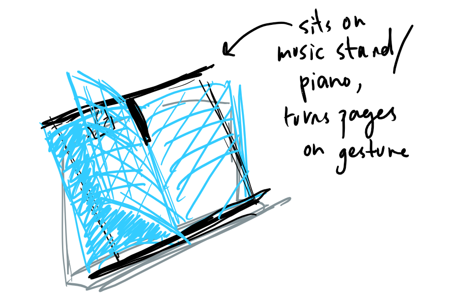 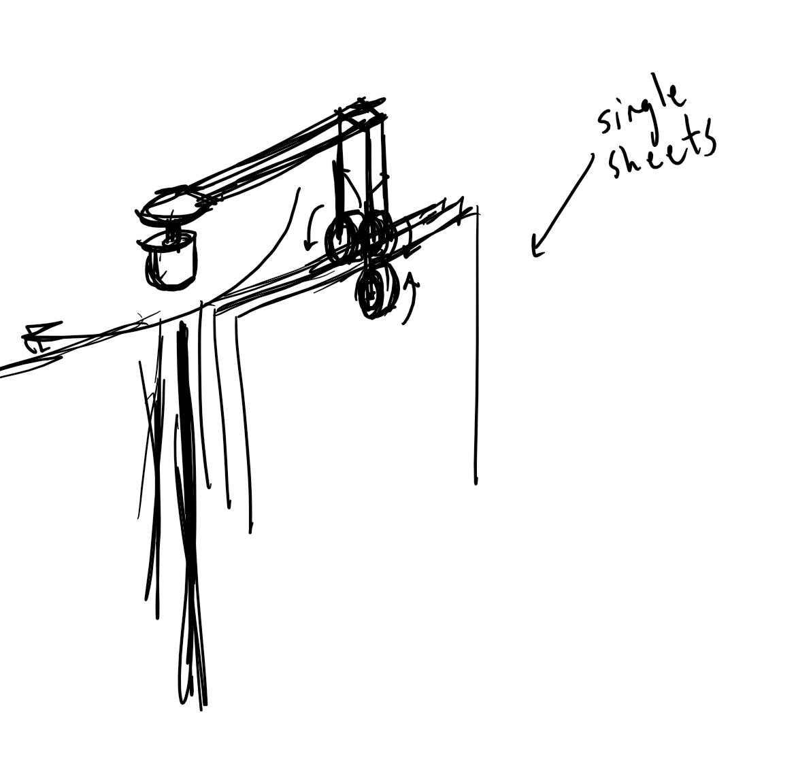
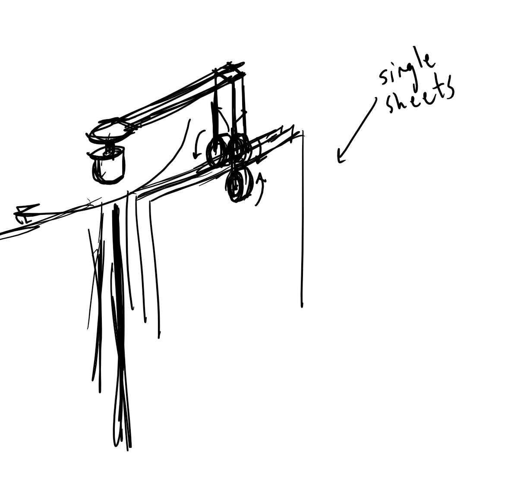
Week 2/3: Prototyping
We design our mount and grabber mechanism. We spend a lot of time and iterations figuring out the tolerances of the printer and changing our dimensions slightly to make the mechanism work.
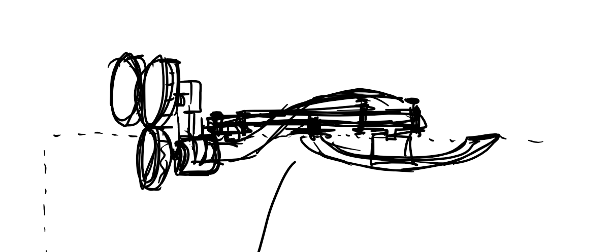 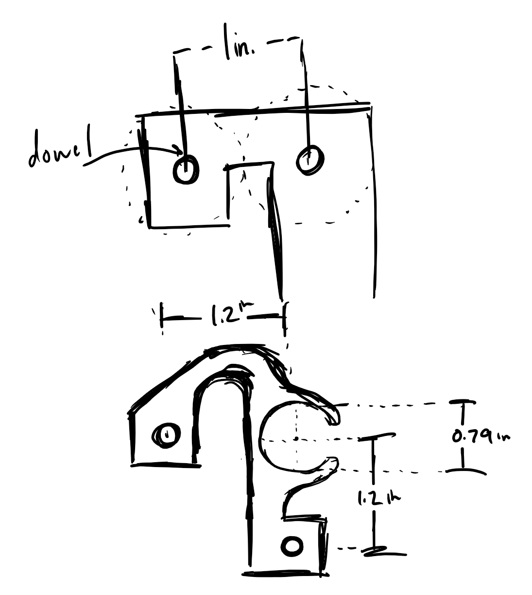 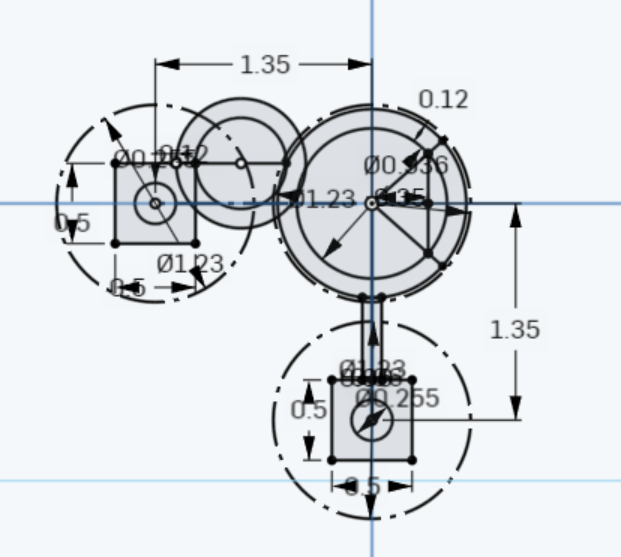 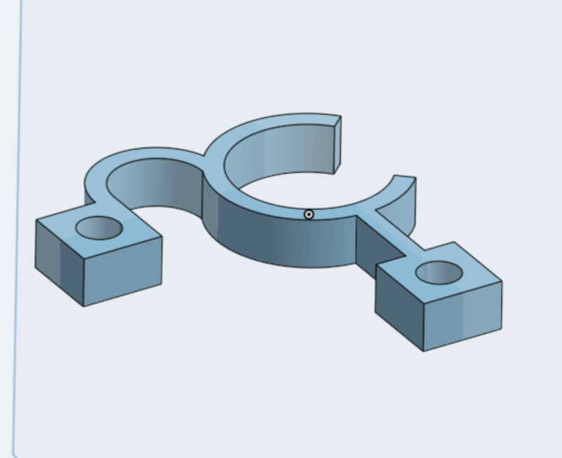Week 3/4: Prototying/Testing
Our grabber mechanism works! We start to design, fabricate, and prototype our guardrail and arm.

 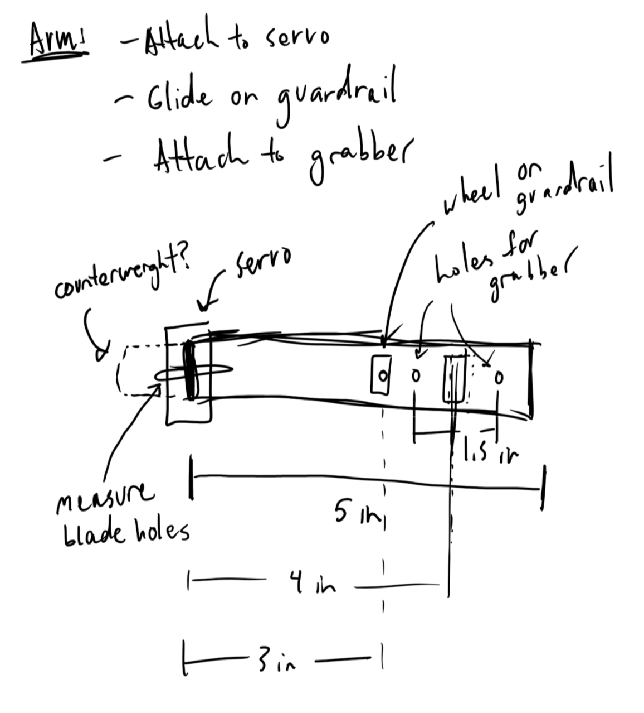
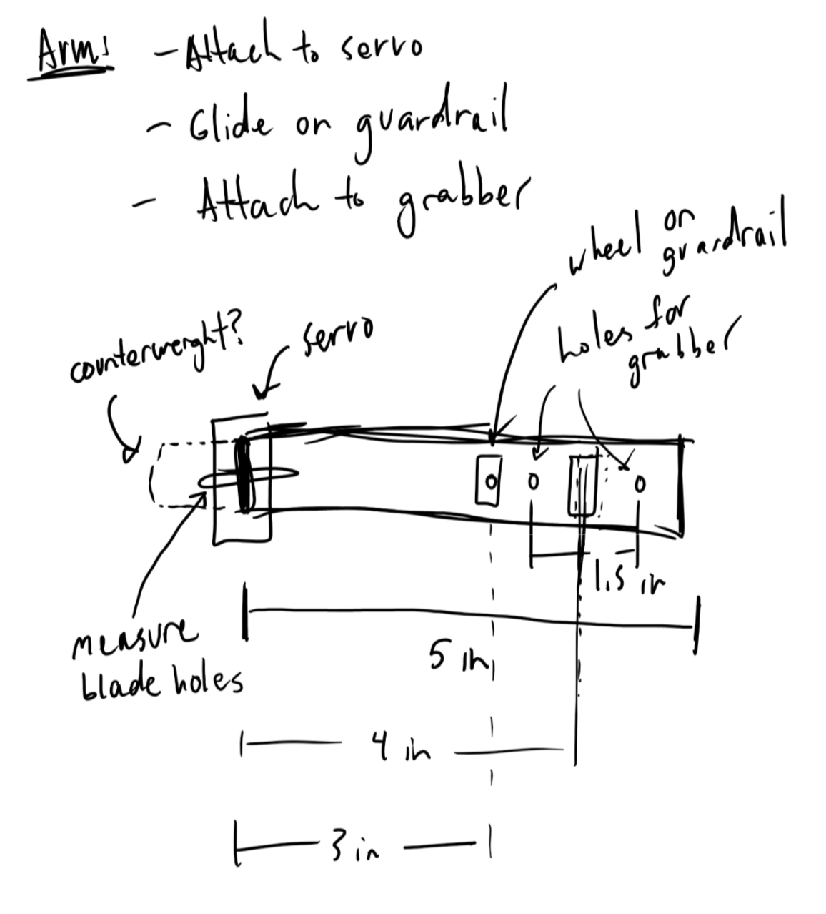
Week 5 (where we're at now): Prototyping/Testing
After several iterations, the whole device put together finally works as we want it to. Currently, we're working on modeling an acrylic base to mount everything more sturdily to.
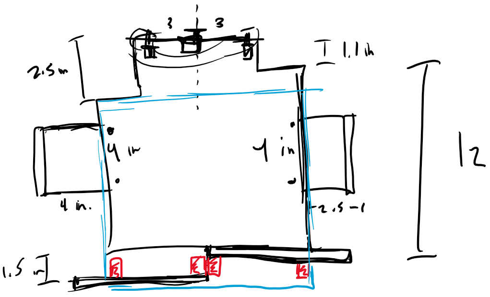
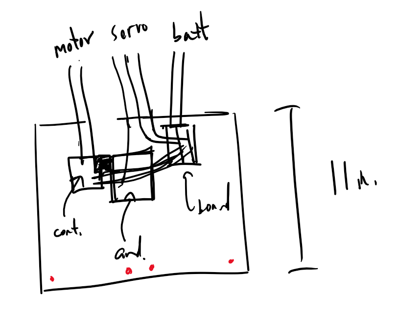